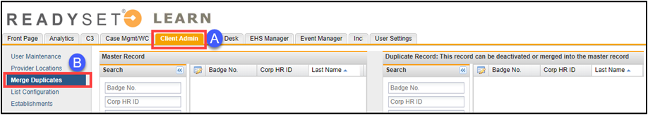
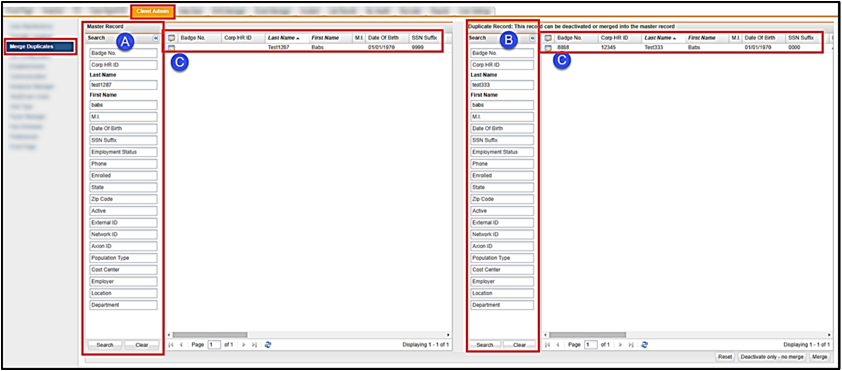
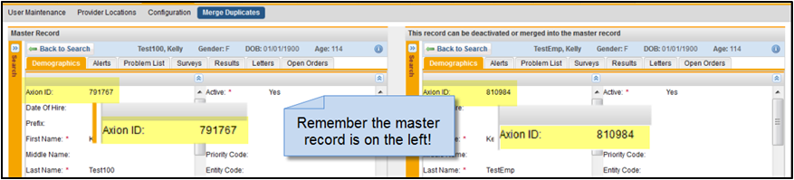
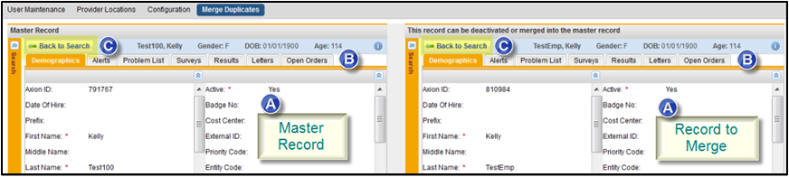
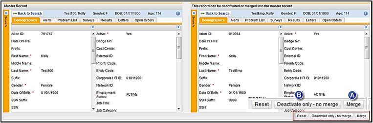
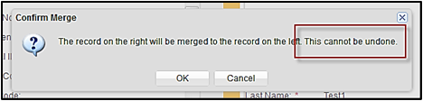
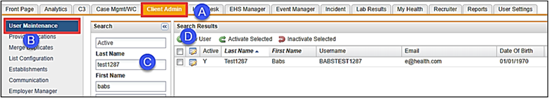
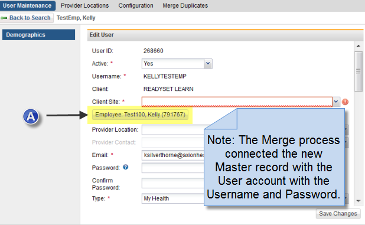
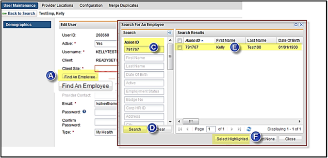

Important facts about the Merge and Deactivate process:
Whenever you merge, you must deactivate.
It does not change the master demographic record.
You may have to use the Void process in the Master Record to remove unused or unneeded charting forms.
Merging has no effect on user names, so you should confirm or correct the employee user record to attach the master record to the employee’s username. This will allow the user to continue using the username and password that they created.
To Merge or Deactivate Records:
Click on the Client Admin tab.
Click Merge Duplicates in the left menu.

In the Master Record section in the left pane, search for the person.
Use the Search process in the right pane for the duplicate account that you want to merge into the Master Record.
Click the Edit icon to open the selected accounts.
The screen will display two regions: the Master Record on the left and the Record to Merge on the right.

You can review all information for both accounts by using the tabs located in Merge:
Demographics
Alerts
Problem List
Surveys
Results
Letters
Open Orders
Please note the Axion ID for both records as you will need to use them to connect the employee’s username and password to the master record. A duplicate record is usually created when the employee created their account, they didn’t match the HR data feed for their name. So, for the employee to continue using their login and password after the merge process you may need to connect it to the Master Record. By using the Axion ID there will be no mistake when connecting the record to the User. We will go through the steps for this in Step 5.

If you need to search again, click Back to Search located on both regions.

After a full review of both accounts when you have determined that these are the correct accounts to merge, click Merge or if there are no medical records to merge, click Deactivate only – no merge.
You are prompted to confirm the merge and reminded that “This cannot be undone."

Click OK.
Merging has no effect on usernames, so you should confirm or correct the employee user record to attach the master record to the employee’s username. This will allow the user to continue using the username and password that they created.

Click on the Client Admin tab.
Click User Maintenance in the left menu.
Search by Last Name or Username.
Click the Edit icon to enter the record.

Check the field “Find An Employee” if it is blank or not the Axion ID from the master record then you will need to connect the active employee record to the user record created by the employee.
For our example, TestEmp, Kelly is the record that has been merged and deactivated, but it has the username and password. So, we may need to attach the correct Master Record Axion ID to the username record that the employee created. The first example below shows that the merge process has already connected the Master Record Axion ID to the Username record. There is nothing else to do with this process. The second example will show that the Find An Employee record is blank.

If the Employee button is blank, then click on the Employee button.
This opens the Search for An Employee dialog box.
Enter the Axion ID for the Master Record.
Click Search.
It will display the Master Record.
Click Select Highlighted (this will attach the user record to the master record).
Click Save Changes.

This completes the process for Merge and Deactivate. If you have any questions concerning any of this process, please contact Customer Support.